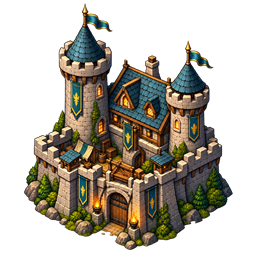

Règles et fonctionnement
Frontières et conquête territoriale
Comprendre la différence entre influence, frontière et prise de contrôle.
Comprendre ce que cela implique
La frontière est calculée à partir de l’influence des lieux contrôlés. Elle représente une approximation en cellules : le dessin ne constitue ni une mesure GPS exacte ni une extension de vision.
Être dans une zone de son équipe ne suffit pas à posséder tous ses lieux. La capture et la connexion territoriale suivent leurs propres conditions, vérifiées par le serveur.

Dans cet article
Détails de référence
Texte de référence mis en forme et conservé dans l’historique de cet article. Les paragraphes datés peuvent décrire une évolution ou une étape antérieure.
Le module app/js/core/territory-service.js est appelé par le serveur pour calculer les territoires. Le navigateur affiche uniquement les contours et les indicateurs reçus. Le scénario Chaos active cette première version avec worldState.flags.territory.enabled.
Influence et frontières
Les capitales, forts, villes, villages, camps et exploitations créent une influence selon leur type, proportionnelle à la surface de la playarea. Les lieux détruits, non placés ou hors zone ne créent pas d’influence. L’équipe est déterminée par le contrôleur du lieu, les participants et les factions de la configuration.
Dans un chevauchement adverse, le lieu le plus proche du centre de chaque cellule l’emporte. Une égalité exacte entre équipes laisse la cellule neutre. Les cellules alliées voisines fusionnent sans contour interne. Seules les limites sont dessinées, avec un trait coloré et une animation de surveillance respectant la réduction des mouvements. Cette animation n’accorde pas de vision GPS supplémentaire.
Le découpage est approximatif : au plus environ 48 cellules sur le plus grand axe, avec une taille minimale GPS de 15 mètres (cellSizeMeters). La simulation utilise les unités planes de sa carte. Les cellules dont le centre est exclu ou hors playarea sont ignorées ; les contours ne sont pas encore des polygones géométriquement découpés aux limites exactes du terrain.
Conquête et connexion
Une présence continue pendant
captureSeconds(60 secondes par défaut) conquiert la cellule occupée, neutre ou adverse.Un départ, une déconnexion, un relevé imprécis ou un intervalle de mesures supérieur à 15 secondes interrompt la tentative. Le GPS exige une précision renseignée d’au plus
maximumAccuracyMeters(30 mètres par défaut).Une présence simultanée de deux équipes bloque la conquête. Plusieurs alliés n’accélèrent pas le délai.
En simulation, la position officielle reste valide tant que le joueur est connecté et son héros actif ; aucun faux relevé GPS n’est généré.
La base principale est le premier lieu contrôlé de l’équipe, avec priorité capitale, fort, ville, village, camp, puis identifiant pour départager.
Une conquête non reliée à cette base par des cellules voisines sur leurs côtés est perdue après
isolationSeconds(120 secondes par défaut). Elle reprend l’influence précédente, ou redevient neutre. Les influences naturelles des bâtiments éloignés subsistent ; la perte automatique concerne les cellules conquises par présence.Conquérir une cellule ne transfère pas la propriété de son bâtiment.
Les conquêtes, tentatives et mesures sont sauvegardées sur le serveur. Les clients reçoivent les frontières publiques, les taux d’occupation et uniquement leur propre progression. Un instantané de configuration envoyé par le navigateur ne peut pas attribuer de territoire lors du lancement.
Quêtes, victoire et combat
Les conditions des fiches à actions peuvent utiliser {"type":"territoryOccupation","minimumRatio":0.4}. Cette condition est évaluée par le service serveur des quêtes pour l’équipe du joueur.
victoryOccupationRatio, optionnel et absent par défaut, termine la partie quand une équipe de joueurs atteint le taux configuré entre 0 et 1. territory.winnerTeamId conserve le vainqueur. Les taux correspondent au nombre de cellules occupées rapporté aux cellules valides : il s’agit d’une estimation de surface, incluant les conquêtes provisoirement isolées.
Les événements territory_captured et territory_lost figurent dans le journal serveur. Il reste à écrire les quêtes de conquête dédiées, à raccorder ces événements à leurs objectifs et à choisir puis appliquer les bonus de combat.
Affichage des frontières et des lieux
Les segments reçus du serveur sont assemblés en contours continus, puis leurs angles sont arrondis pour l’affichage. Une ligne lumineuse souligne la limite, et un dégradé coloré s’efface vers l’intérieur uniquement : un masque évite sa propagation hors du territoire et dans les trous neutres. Le centre reste transparent. L’animation de surveillance respecte la réduction des mouvements.
Les cercles d’interaction des lieux ont une opacité de remplissage de 18 % (auparavant 9 %) et un contour à 55 % (auparavant 35 %). Leurs rayons restent ceux de l’état officiel. Ces changements graphiques ne modifient ni la conquête, ni la connexion des cellules, ni les portées ou permissions.